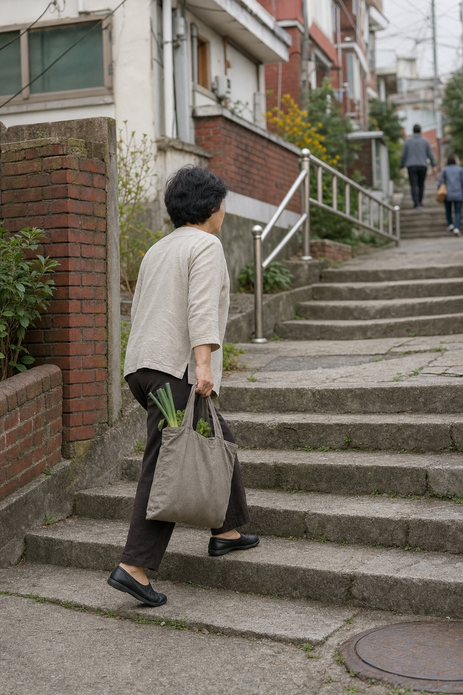

WHY WE EXIST
우리는 센터를 소개하는 데서
멈추지 않습니다.
다시 편하게 걷고, 출근하고, 가족과 시간을 보내고, 좋아하던 취미를 이어가는 것. DAIL은 사람마다 다른 회복의 목적을 이해하고, 그 목적에 맞는 전문 운동센터를 발견할 수 있도록 연결합니다.
OUR NAME
DAIL은 DAILY LIFE를
압축한 이름입니다.
운동을 시작하는 진짜 이유는 운동 그 자체가 아닙니다. 몸에 대한 걱정을 덜고, 다시 운동을 시작하고, 나다운 하루를 이어가기 위해서입니다. DAIL은 그 일상으로 향하는 출발점을 만듭니다.
DAILY LIFE FOR EVERYONE
일상의 모습은
사람마다 다르니까


“누군가에게는 출근이고,
누군가에게는 가족과의 산책이며,
또 누군가에게는 다시 시작하는 취미입니다.”
DAIL은 통증이나 움직임에 대한 걱정보다, 그 너머에 있는 각자의 생활을 바라봅니다.
THE DAIL JOURNEY
센터를 찾는 순간부터
일상으로 돌아가는 과정까지
-
01
발견하다
내 주변의 전문 운동센터를 지도에서 찾습니다.
-
02
비교하다
프로그램과 운영 정보를 같은 기준으로 살펴봅니다.
-
03
움직이다
나에게 맞는 전문가와 더 나은 움직임을 시작합니다.
-
04
돌아가다
내가 소중하게 여기는 일상을 다시 이어갑니다.
발견 → 움직임 → 일상
OUR SYMBOL
하나의 심벌에 담은
DAIL의 여정
알파벳 D, 위치 핀, 그리고 앞으로 이어지는 길을 하나의 형태에 담았습니다. 작은 아이콘에서도 DAIL을 기억하고, 서비스의 역할을 직관적으로 떠올릴 수 있도록 만든 구조입니다.
DAIL
DAIL의 첫 글자
브랜드를 기억하게 하는 단단한 외곽
내 주변의 발견
지도에서 전문 센터를 찾는 핵심 기능
이어지는 길
변화와 회복을 지나 더 나은 일상으로
BRAND COLORS
따뜻한 변화와
흔들리지 않는 신뢰
DAIL TEAL
차분한 변화
건강한 움직임과 안정감, 그리고 전문적인 신뢰를 함께 표현합니다.
NAVY
검증된 신뢰
전문성 있는 정보와 분명한 등록 기준을 상징합니다.
OUR STANDARD
믿을 수 있는 선택은
분명한 기준에서 시작됩니다.
- 01자격을 확인합니다
물리치료사 면허 보유자가 운영하는 센터만 등록 신청을 받습니다.
- 02정보를 같은 기준으로 보여줍니다
프로그램, 전문 분야, 운영시간과 위치를 한눈에 비교할 수 있게 정리합니다.
- 03선택의 주도권을 사용자에게 돌려줍니다
과장된 약속보다 확인 가능한 정보로 나에게 맞는 선택을 돕습니다.
DAIL — DAILY LIFE